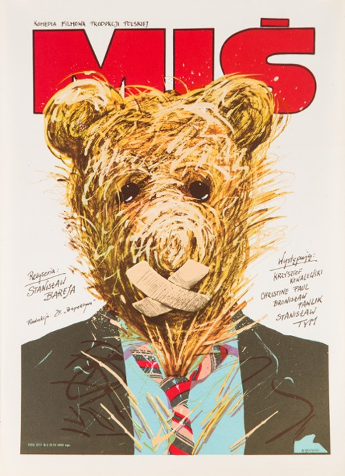
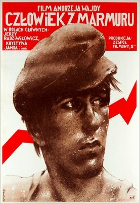
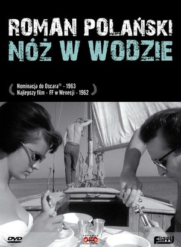
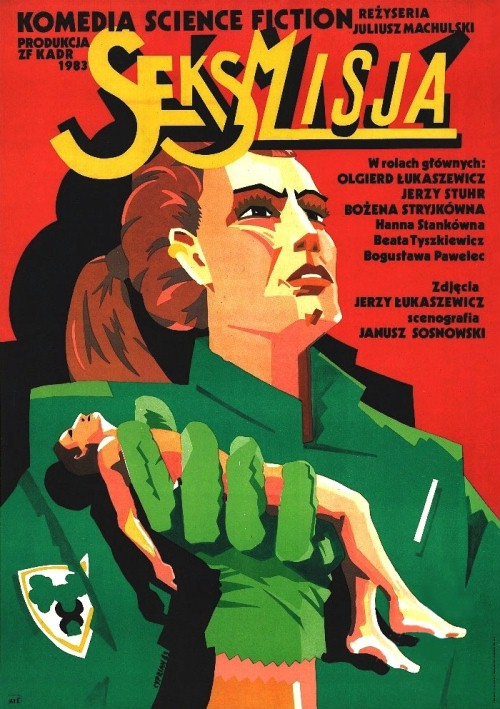
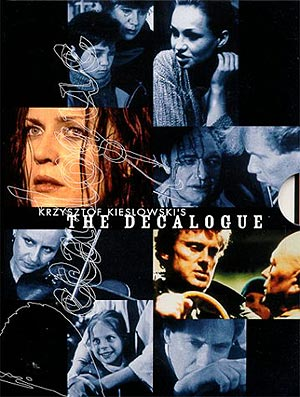
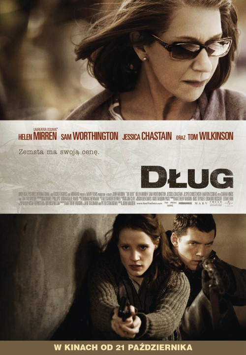
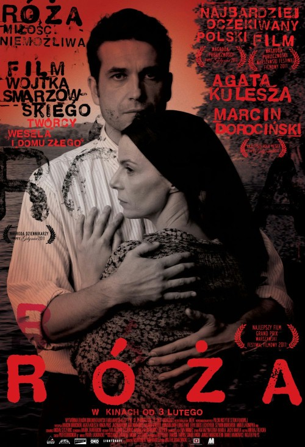
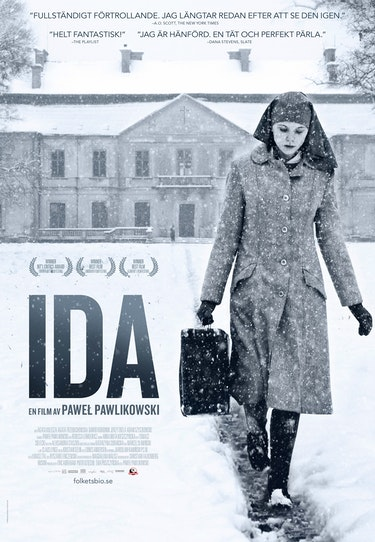
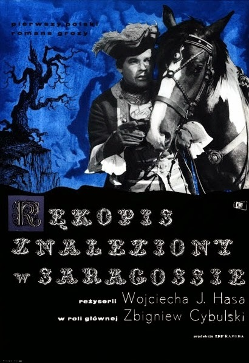
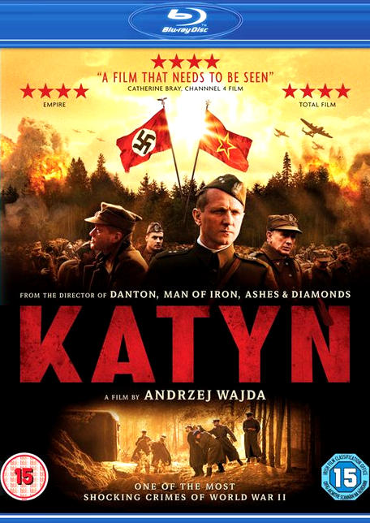

З такими тотемними іменами, як Роман Поланскі, Кшиштоф Кесьльовський та Анджей Вайда, школа польського кіно миттєво викликає повагу та увагу. З моменту народження рухомого зображення воно подарувало нам незліченні шедеври кіно, починаючи від задумливих екзистенціальних викривань людського розуму і закінчуючи нескінченними політичними коментарями радянської держави. Ось подивіться на десять польських фільмів, які ви просто не можете дозволити собі пропустити.
Міщ (1981)
Відповідь комуністичної Польщі на сучасну чорну комедію розповідає про долі та нещастя завзятого менеджера спортивного клубу Міщ (або Плюшевого ведмедика англійською мовою), який змушений вступити в змову проти обмежень залізної завіси, щоб запобігти зникненню своєї потураючої колишньої дружини з усіма грошима, які вони разом заощадили на рахунку в англійському банку в минулі роки. Сюжет коливається між фарсовими злетами та дивовижно смішними меланхолійними падіннями та переносить глядачів у подорож смішною бюрократією Польщі за часів Радянського Союзу.
Людина з мармуру (1977)
Мабуть, найкраща розповідь про «державну Польщу», яка виникла з непевних днів 1970-х років, « Людина з мармуру» — це сміливе міркування про просте людство, оточене складнощами та махінаціями радянського болота. У ньому розповідається про відверту й індивідуалістичну молоду студентку кіно Агнешку, яка вирішує задокументувати життя колишнього героя пролетаріату Матеуша Біркута, чий стахановський успіх у період високого сталінізму зробив його персонажем для червоних. Однак не все так просто, як здається, і незабаром Агнешка відкриває безліч правд про справжнє життя Біркута та його зв’язки з рухом Солідарності, що розвивався на той час.
Ніж у воді (1962)
Хто б очікував від повнометражного дебюту Романа Поланська I чогось меншого, ніж ця надзвичайно напружена героїня, яка протиставляє молодих і старих і оповита пороками невірності, ревнощів і тваринної гордості? Походить із напружених днів 1962 року, «Ніж у воді» розповідає про боротьбу за владу та політику на кожному кроці, завдяки ретельній операторській роботі, яка добре справляється з пасивно-агресивною фізичністю між двома чоловічими персонажами на екрані. Простий сюжет діє як чудовий каталізатор напруженості, яка виникає, побачивши, як подружня пара підбирає автостопщика, який їде на вітрильну подорож, лише щоб спостерігати, як їхні власні нестабільні стосунки розплутуються прямо на їхніх очах.
Сексмісія (1983)
Seksmisja - це польська культова комедія 1983 року розповідає історію двох відданих своїй справі вчених, які підкоряються проекту свого роду сплячки. Поки вони сплять, на землі спалахують політичні катастрофи і про чоловіків майже забувають, поки нарешті не пробуджуються через понад 50 років після того, як вони і очікували, у 2044 році. Вони виявляють світ, який повністю контролюється жінками, і, природно, настає веселощі, коли двоє чоловічих персонажів намагаються знайти свій шлях. Крім фарсу, Seksmisja також грає на тоталітарній природі радянської машини та розробляє потужний соціальний коментар, вирівнюючи запеклих феміністичних лідерів майбутнього з комуністичними контролерами Польщі 1980-х років.
Декалог (1989)
Розкиданий на десять окремих годинних епізодів, «Декалог» Кшиштофа Кесьльовського та Кшиштофа Песевіча малює внутрішній і необроблений образ людського стану, використовуючи особисті та інтимні сюжетні лінії, щоб спонукати до розгляду психіки людини та її стосунків з Бог-м, мораллю, християнською церквою, сучасною польською державою та обмеженнями сучасного польського суспільства. Все це відбувається в похмурому й гнітливому оточенні пострадянського багатоквартирного кварталу на півдні Варшави, де буденність життя, затримані примари російськогодержавного контролю і діалектика між сучасною раціональністю та релігійним завзяттям, які допомогли зберегти польську ідентичність протягом бурхливого 20-го століття, створюють лабіринт виборів і наслідків, уникнути якого майже неможливо.
Борг (2010)
Чудовий і карколомний трилер про парк Горького, «Борг» розповідає історію двох молодих підприємців із Варшави, які шукають, здавалося б, респектабельного лихваря, щоб отримати стартові гроші у новому підприємстві. Рішення виявляється фатальним, і невдовзі двоє головних героїв зв’язуються з російською мафією, яку повільно доводять до межі. По суті, фільм є перевіркою моралі, що піддається випробуванню, і озвучує діалектику між новим польським капіталізмом і старим, комуністичним. Безумовно, є додатковий рівень занурення, який виходить від резонансу фільму з реальним випадком із життя 1994 року .
Роза (2011)
Переконлива історія про кохання, втрати та людські жертви, «Роза» Войцеха Смаржовського 2011 року розповідає історію двох дуже різних персонажів, які живуть у післявоєнній Польщі. Дія зосереджується на колишній прусській області Мазурії, де Тадеуш Мазур зустрічає однойменну Розу, вдову нацистського солдата, який сильно постраждав від рук натовпу, який зараз контролює цей віддалений регіон на сході. Незабаром Роза і Мазур вплутуються в історію взаємної поваги та любові, якій заважає прихід радянської влади та упередження надто завзятих польських націоналістів.
Іда (2013)
Цей продуманий, переконливий, похмурий і часто задумливий твір кіно відомого режисера Павла Павліковського веде своїх глядачів у самі глибини польського суспільства 20-го століття. Там вони відкривають для себе тривожні реалії забутого минулого, які приносить на стіл головна героїня фільму та тезка Іда (її чудово грає Агата Тшебуховська). Випромінюючи невинність і юнацьку наївність, монахиня-послушниця Іда вирушає у подорож зі своєю тіткою Вандою Груз, і на екрані повільно розгортаються темні закутки післявоєнного політичного болота у грандіозному зіткненні культур, особистостей, епох.
Сарагоський рукопис (1965)
У 2001 році назвали «Сарагоський рукопис» «шедевром польського кіно» - ця епічна історія Войцеха Хаса переносить своїх глядачів до іспанського міста Сарагоса на початку 1800-х років, де розгорталися наполеонівські війни. Сюжет розповідає про складні та містичні повороти оригінального роману польського письменника-просвітителя графа Яна Потоцького, в епосі якого герой зустрічається з мавританськими принцесами та шаманами-кабалістами на пагорбах Сьєрра-Морени. Усе це дуже «Тисяча і одна ніч», але створює справді захоплюючу сюжетну лінію від початку до кінця.
Катинь (2007)
Можливо, найкращий приклад сучасної польської військової епопеї походить від Анджея Вайди зі слави «Людина з мармуру», який зумів отримати незліченну кількість номінацій і похвал за цей твір – не в останню чергу місце в категорії «Найкращий фільм іноземною мовою» на «Оскарі». Тема добре відома й задокументована – масове вбивство більш ніж 22 000 польських військових офіцерів і військовополонених радянськими військами в 1940 році. Це залишається предметом політичних суперечок донині, оскільки накази про заборону розповсюдження Катині в Китаї та інтуїтивна реакція російських ЗМІ на реліз добре це показує.